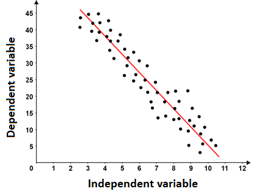
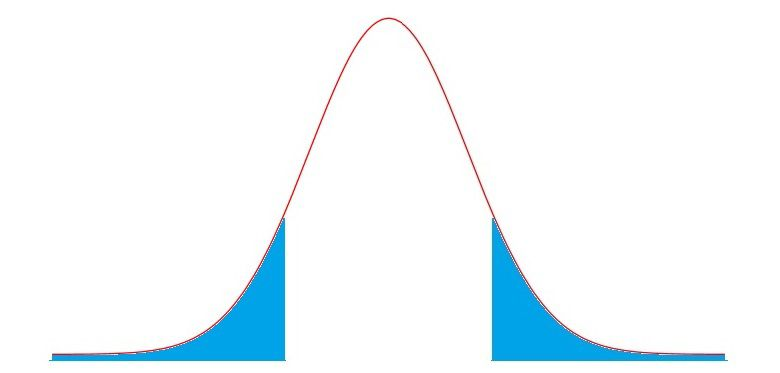

library(tidyverse)
library(fixest)
library(texreg)This chapter introduces regression, the key technique used in econometrics and statistics to measure relationships between variables. We will explore the basics of regression, including how the model is specified, the coefficients of the model, the estimation process, and statistical inference techniques.
Topics: Correlation, Simple Linear Regression, Ordinary Least Squares Estimator, Interpretation of Coefficients, Standard Errors, Hypothesis Testing
1.1: Correlations and Measuring Relationships Between Variables
Econometrics is the field of using data to answer economic and social science questions. While econometrics was initially developed for economic questions, it has become widely applied to other social sciences.
Econometrics is often concerned with causal questions:
- What is the effect of years of education on income?
- What is the effect of democracy/dictatorship on economic growth and development?
- What is the effect of income on the likelihood of someone turning out to vote?
Correlation is not Causation
Variables are correlated with each other, if one variable changing is associated with another variable changing on average.
- For example, if x increases, the average y value increases, then x and y are correlated.
- The opposite is also true: if x increases, the average y value decreases, then x and y are correlated.
For example, the graphs below show correlations between variables:

Definition: Sources of Correlation
There are three main reasons why two variables x and y may be correlated:
- There is a causal effect of x on y
- A third variable, w, causes both x and y to change (so there is no direct effect of x on y)
- There is a causal effect of y on x
These causes can occur simultaneously at the same time. Thus, correlation is not causation, as correlation can be caused by other factors.
However, while correlation is not causation, we still need to understand correlation before we study causation.
Measuring Relationships Between Variables
How can we explore the relationship between a continuous x variable and a continuous y variable?
One way to explore the relationship is with a best-fit line. A best-fit line is useful, since the slope of the best-fit line represents the change in y for every unit change in x.

In the figure above, we have plotted a number of observations, and implemented a best-fit line in red. The graph here introduces some common terminology:
- The independent variable, also called the explanatory variable or treatment variable, is the variable that we believe is doing the causing. It is typically notated x.
- The dependent variable, also called the response variable or outcome variable, is the variable that is affected by a change in the independent variable. The dependent variable is typically notated with y.
We know from algebra that a linear equation takes the form y=mx+b. The slope m describes the rate of change of y for a one unit change in x.
- Thus, the slope is a measurement of the relationship between x and y.
Thus, if we can fit a best-fit line to our data, we can look at the slope, and determine the relationship between x and y.
Warning!
Note how I have been using the word relationship, not causal effect.
Relationship is the measure of correlation. Correlation is not causation!
- This chapter is focused on correlation, and we will explore causation in later chapters.
1.2: The Simple Linear Regression Model
How can we fit a best-fit line in order to find the relationship between x and y? The main way to do this is with the simple linear regression model.
First, what is a regression model? A regression model is the specification of the conditional distribution of y, given x.
A distribution (random variable) says that there are multiple potential values of y.
- For example, if x is age, and y is income, a distribution of income y says that not all individuals make the same amount of money.
- If you select someone at random, the probability of selecting someone with a specific income y_i will depend on the probability distribution of income.
A conditional distribution says that the distribution of y is conditional (depends on) the value of x.
- For example, if x is age, and y is income, a conditional distribution of income y on age x says that depending on the age x of an individual, the probability distribution of income y will change.
- This makes sense - if the probability distribution of y is not affected at all by the value of x, then clearly x is not related to y.
The linear regression model focuses on the expected value of the conditional distribution, notated \mathbb{E}[y_i | x_i].
- The expected value, also known as the mean, is the “best guess” of y (since y is a probability distribution with many values).
Definition: Simple Linear Regression
The simple linear regression model takes the following form:
\mathbb{E}[y_i | x_i] = \beta_0 + \beta_1 x_i
- Where we have n number of observations in our data, i being any one of them, and each observation has an x and y value (x_i, y_i).
- Where \mathbb{E}[y_i | x_i] is the expected value of the conditional distribution of y_i|x_i. That distribution has a variance Var(y_i | x_i) = \sigma^2.
- Where \beta_0 (intercept) and \beta_1 (slope) are coefficients of the model that need to be estimated.
We can also write the simple linear regression model in respect to a specific y_i value, rather than the expected value:
y_i = \beta_0 + \beta_1 x_i + u_i
- Where we have n number of observations in our data, i being any one of them, and each observation has an x and y value (x_i, y_i).
- Where \beta_0 (intercept) and \beta_1 (slope) are coefficients of the model that need to be estimated.
- Where u_i is the error term. Remember, y_i is any value in the conditional distribution y_i|x_i, so it may not be exactly at the expected value of the conditional distribution. Thus, we have to add an error term to account for this distribution, where \mathbb{E}[u_i] = 0 and Var[u_i] = \sigma^2.
1.3: Fitted Values and the Sum of Squared Errors
Fitted Values and Best-Fit Lines
We have discussed the form a simple linear regression takes. However, this is not the best-fit line: we still need to estimate the coefficients \beta_0 (intercept) and \beta_1 (slope) in order to create a best-fit line.
The estimates of \beta_0 and \beta_1 that we obtain will be denoted with a hat ^: \hat\beta_0 and \hat\beta_1.
We will discuss the estimation process in the next section.
Once we have obtained our estimates of the coefficients, we will have a best-fit line, also called a fitted-values model:
\hat{y} = \hat\beta_0 + \hat\beta_1x_i
- Where \hat{y} are the predicted values of y based on our best-fit line.
- Where \hat\beta_0 and \hat\beta_1 are our estimates for the true coefficients \beta_0 and \beta_1.
- Note that the error term u_i disappears. This is because the average value of u_i is \mathbb{E} [u_i] = 0, so we do not need to include the term.
We can use the fitted values in two ways:
- The \hat\beta_1, which is the estimate of \beta_1 (slope), tells us the relationship between x and y.
- The equation outputs a prediction \hat y, so we can use the fitted values to make predictions. We will focus on prediction in later parts of the course.
Sum of Squared Errors
We want to fit a best-fit line that is accurate. So, we want to find the \beta_0 (intercept) and \beta_1 (slope) values that will best fit our observed dataset.
One way we can fit an accurate line is to find the best-fit line that minimises the sum of squared errors.
Definition: Sum of Squared Errors
The sum of squared errors (SSE) is as follows:
\begin{split} SSE & = \sum\limits_{i=1}^n (y_i - \hat y_i)^2 \\ & = \sum\limits_{i=1}^n (y_i - \hat\beta_0 - \hat\beta_1 x_i)^2 \end{split}
The sum of squared errors is exactly as it sounds. Find the error, the distance between the actual y_i and predicted \hat y, which is y_i - \hat y, then square that error (y_i - \hat y_i)^2, then sum up for all observations i in the data.
We get the second equation by substituting in the fitted values model (discussed in the last section), where \hat{y} = \hat\beta_0 + \hat\beta_1x_i.
The Ordinary Least Squares (OLS) Estimator estimates the coefficients \beta_0 and \beta_1 by finding the values of \beta_0 and \beta_1 that result in the line with the smallest sum of squared errors.
A common question is: why are the errors squared?.
- This is because we are only concerened with the size/magnitude of errors, not the direction of errors.
- A simple subtraction to obtain errors would include negative errors (where the prediction \hat y is higher than the actual y_i), and positive errors (where the prediction \hat y is lower than the actual y_i).
- But we do not care if the error is above or below the true y_i. We only care about the size.
- Thus, by squaring the errors, we get rid of the negatives and everything is positive.
Then, why not absolute value? This is for a few reasons:
Firstly, the absolute value function is not differentiable at the vertex. This is an issue, as we will see in the OLS estimation process, we need to take the derivative of the error function for minimisation purposes.
Second, the OLS estimator with its squared errors has a few unique properties that make it very consistent and unbiased. We will focus on these in chapter 4 when we discuss causal inference with regressions.
In the next section, we will discuss the mathematics behind the OLS estimator.
1.4: Mathematics of the Ordinary Least Squares Estimator
As we discussed in the previous section, the Ordinary Least Squares Estimator estimates our coefficients \beta_0 (slope) and \beta_1 (intercept) by finding the values of \beta_0 and \beta_1 that minimise the sum of squared errors.
We can describe the goal of OLS in a more mathematical way:
Definition: Ordinary Least Squares (OLS) Estimator
The goal of the Ordinary Least Squares (OLS) Estimator is to find the values of \beta_0 and \beta_1 that make the following statement true:
\begin{split} (\hat{\beta}_0, \hat{\beta}_1) & = \arg \min\limits_{\hat{\beta}_0, \hat{\beta}_1} \sum\limits_{i=1}^n (y_i - \hat{\beta}_0 - \hat{\beta}_1x_i)^2 \\ & = \arg \min\limits_{\hat{\alpha}, \hat{\beta}} S(\hat{\beta}_0, \hat{\beta}_1) \end{split}
Where function S is the sum of squared errors.
How do we minimise S (the function of the sum of squared errors)?
- From calculus, we know that a minimum/maximum of a function is where the derivative of the function is equal to 0.
Thus, let us find the partial derivative of the function S in respect to both \hat\beta_0 and \hat\beta_1, and set them equal to 0. This is also called the first-order conditions.
First Order Conditions
First, let us find the partial derivative of S in respect to \hat\beta_0:
\frac{\partial S(\hat{\beta}_0, \hat{\beta}_1)}{\partial \hat{\beta}_0} = \frac{\partial S(\hat{\beta}_0, \hat{\beta}_1)}{\partial \hat{\beta}_0} \left[ \sum\limits_{i=1}^n (y_i - \hat{\beta}_0 - \hat{\beta}_1x_i)^2 \right]
First, ignore the summation. The partial derivative of the internal section, using chain rule, is the following:
\frac{\partial}{\partial \hat{\beta}_0} \left[ (y_i - \hat{\beta}_0 - \hat{\beta}_1 x_i)^2 \right] = -2(y_i - \hat{\beta}_0 - \hat{\beta}_1 x_i)
But how do we deal with the summation? We know that there is the sum rule of derivatives [f(x) + g(x)]' = f'(x) + g'(x). Thus, we know we just sum up the derivatives to get the derivative:
\begin{split} \frac{\partial S(\hat{\beta}_0, \hat{\beta}_1)}{\partial \hat{\beta}_0} & = \sum\limits_{-i=1}^n \left[ -2(y_i - \hat{\beta}_0 - \hat{\beta}_1 x_i) \right] \\ & = -2 \sum\limits_{i=1}^n (y_i - \hat{\beta}_0 - \hat{\beta}_1 x_i) \end{split}
To find the value of \hat\beta_0 that minimises S, we set the derivative equal to 0. We can ignore the -2, since if the summation is equal to 0, the whole derivative will equal 0. Thus, the first order condition is:
\sum\limits_{i=1}^n (y_i - \hat{\beta}_0 - \hat{\beta}_1 x_i) = 0
Now, let us do the same for \hat\beta_1. Using the same steps as before
\begin{split} \frac{\partial S(\hat{\beta}_0, \hat{\beta}_1)}{\partial \hat{\beta}_1} & = \sum\limits_{i=1}^n \left[ -2x_i(y_i - \hat{\beta}_0 - \hat{\beta}_1 x_i) \right] \\ & = -2 \sum\limits_{i=1}^n x_i(y_i - \hat{\beta}_0 - \hat{\beta}_1 x_i) \end{split}
The first order condition for \hat\beta_1 will be (again, ignoring the -2 for the same reason as before):
\sum\limits_{i=1}^n x_i(y_i - \hat{\beta}_0 - \hat{\beta}_1 x_i) = 0
Definition: First Order Conditions of OLS
Thus, the first order conditions of OLS are:
\begin{split} & \sum\limits_{i=1}^n (y_i - \hat{\beta}_0 - \hat{\beta}_1 x_i) = 0 \\ & \sum\limits_{i=1}^n x_i (y_i - \hat{\beta}_0 - \hat{\beta}_1 x_i) = 0 \end{split}
Solving the System of Equations
We now have our two first-order conditions. Now, we basically have a 2-equation system of equations, with 2 variables.
- We can solve this through substitution - in the first equation, solve for \hat\beta_0 in terms of \hat\beta_1.
- Then, plug in \hat\beta_0 in terms of \hat\beta_1 into the second equation, thus making that a one-variable equation. We can solve that equation for \hat\beta_1, then find \hat\beta_0.
First, let us solve the first equation for \hat\beta_0 in terms of \hat\beta_1:
\begin{split}\sum\limits_{i=1}^n (y_i - \hat{\beta}_0 - \hat{\beta}_1 x_i) & = 0 \\ \sum\limits_{i=1}^n y_i - n \hat{\beta}_0 - \hat{\beta}_1 \sum\limits_{i=1}^n x_i & = 0 \\ -n\hat{\beta}_0 &= -\sum\limits_{i=1}^n y_i + \hat{\beta}_1\sum\limits_{i=1}^nx_i \\ \hat{\beta}_0 & = \frac{1}{n} \sum\limits_{i=1}^n y_i - \frac{1}{n}\hat{\beta}_1 \sum\limits_{i=1}^n x_i \\ & = \bar{y} - \hat{\beta}_1 \bar{x} \end{split}
Now, let us substitute our calculated \hat{\beta}_0 = \bar{y} - \hat{\beta}_1 \bar{x} into the \hat{\beta}_1 condition and solve: for \hat{\beta}_1:
\begin{split}0 & = \sum\limits_{i=1}^n \left[ x_i(y_i - [\bar{y} - \hat{\beta}_1\bar{x}] - \hat{\beta}_1x_i) \right] \\ & = \sum\limits_{i=1}^n \left[ x_i(y_i - \bar{y} - \hat{\beta}_1 (x_i - \bar{x})) \right] \\ & = \sum\limits_{i=1}^n \left[ x_i(y_i - \bar{y}) - x_i \hat{\beta}_1(x_i - \bar{x}) \right] \\ & = \sum\limits_{i=1}^n x_i (y_i - \bar{y}) - \hat{\beta}_1 \sum\limits_{i=1}^nx_i (x_i - \bar{x})\end{split}
Summation Properties
To help us solve this problem, note these 3 properties of summation:
\begin{split}& \sum\limits_{i=1}^n (x_i - \bar{x}) = 0 \\& \sum\limits_{i=1}^n x_i(y_i - \bar{y}) = \sum\limits_{i=1}^n(x_i - \bar{x}) (y_i - \bar{y}) \\& \sum\limits_{i=1}^n x_i(x_i - \bar{x}) = \sum\limits_{i=1}^n(x_i - \bar{x})^2\end{split}
Knowing these properties of summation, we can transform what we had before into:
\begin{split} 0 & = \sum\limits_{i=1}^n(x_i - \bar{x})(y_i - \bar{y}) - \hat{\beta}_1 \sum\limits_{i=1}^n (x_i - \bar{x})^2 \\ \hat{\beta}_1 \sum\limits_{i=1}^n (x_i - \bar{x})^2 & = \sum\limits_{i=1}^n(x_i - \bar{x})(y_i - \bar{y}) \\ \hat{\beta}_1 & = \frac{\sum\limits_{i=1}^n (x_i - \bar{x})(y_i - \bar{y})}{\sum\limits_{i=1}^n(x_i - \bar{x})^2} \end{split}
Definition: OLS Estimate of Coefficient
Thus, the OLS estimate \hat\beta_1 (slope) of the linear regression model is:
\hat{\beta}_1 = \frac{\sum\limits_{i=1}^n (x_i - \bar{x})(y_i - \bar{y})}{\sum\limits_{i=1}^n(x_i - \bar{x})^2} = \frac{Cov(x, y)}{Var(x)} = \frac{\sigma_{xy}}{\sigma_x^2}
This is also the expected change in y given a one unit increase in x.
- Remember, this is the relationship between x and y, not the causal effect.
Of course, we still need to find \hat\beta_0 (the slope). We found that \hat\beta_0 = \bar{y} - \hat{\beta}_1 \bar{x} earlier, so we just plug that in.
And now, we have our estimates \hat\beta_0 and \hat\beta_1, and thus we now have a best-fit line and an estimate of the relationship between x and y.
1.5: Interpretation of OLS Coefficient Estimates
We now have estimated \hat\beta_0 and \hat\beta_1. But what do these actually mean in the context of the relationship between x and y?
- Let us start with \hat\beta_1, which is the slope, the more important of the two coefficients.
Interpretation of \hat\beta_1 For Continuous x
We know that in a linear model, \mathbb{E}[y_i|x_i] = \beta_0 + \beta_1 x_i, the coefficient \beta_1 is the slope.
- And the slope is the change in y given a one unit increase in x.
Using this knowledge, we can interpret estimate \hat\beta_1.
Interpretation of \hat\beta_1
When x increases by one unit, there is an expected \hat{\beta}_1 unit change in y.
Warning!
Remember, this is the relationship between x and y, not the causal effect.
Interpretation of \hat\beta_1 for Binary x
Binary explanatory variables are variables with 2 values, 0 and 1.
- Binary explanatory variables are extremely common in the social sciences. They can include things such as yes/no questions, treatment/control, true/false questions, voted/did not vote, etc.
Binary explanatory variables will change the interpretations of our coefficients.
We can “solve” for these interpretations. Assume x has two categories x=0 and x=1:
\begin{split} & \hat y_{i, \ x = 0} = \hat\beta_0 + \hat\beta_1(0) = \hat\beta_0 \\ & \hat y_{i, \ x = 1} = \hat\beta_0 + \hat\beta_1(1) = \hat\beta_0 + \hat\beta_1 \\ & \hat y_{i, \ x = 1} - \hat y_{i, \ x = 0} = (\hat\beta_0 + \hat\beta_1) - \hat\beta_0 = \hat\beta_1 \end{split}
Thus, we can interpret the coefficients as follows:
Interpretation of Coefficient with a Binary Explanatory Variable
When x is a binary explanatory variable:
- \hat\beta_0 is the expected value of y given an observation in category x = 0
- \hat\beta_0 + \hat\beta_1 is the expected value of y given an observation in category x = 1
- \hat\beta_1 is the expected difference in y between the categories x=1 and x=0.
Warning!
Remember, this is the relationship between x and y, not the causal effect.
Interpretation of \hat\beta_0
We know that in a linear model, \mathbb{E}[y_i|x_i] = \beta_0 + \beta_1 x_i, the coefficient \beta_0 is the y-intercept.
- And the y-intercept is the change value of y given x=0.
We can prove this mathematically:
\begin{split} \hat y_{i, \ x_i = 0} & = \hat\beta_0 + \hat\beta_1 x_i \\ & = \hat\beta_0 + \hat\beta_1(0) \\ & = \hat\beta_0 \end{split}
Thus, knowing this, we can interpret \hat\beta_0.
Interpretation of \hat\beta_0
When x=0, the expected value of y is \hat{\beta}_0
Interpreting \beta_1 in Terms of Standard Deviations
Sometimes, it is hard to understand what changes in y and x mean in terms of units. For example, if we are measuring “democracy”, what does a 5 unit change in democracy mean? Is that a lot?
We can add more relevant detail by expressing the change of y and x in standard deviations.
How do we calculate this? Well, let us solve for the change in \hat{y}_i/\sigma_y given x_i = x and x = x + \sigma_X. This will tell us how much \hat{y} changes by given a increase of one standard deviation in x:
\begin{split} \frac{\hat y_{i, \ x_i = x + \sigma_x}}{\sigma_y} - \frac{\hat y_{i, \ x_i = x}}{\sigma_y} & = \frac{\hat\beta_0 + \hat\beta_1 x_i}{\sigma_y} - \frac{\hat\beta_0 + \hat\beta_1 x_i}{\sigma_y} \\ & = \frac{\hat\beta_0 + \hat\beta_1 (x+\sigma_x) - (\hat\beta_0 + \hat\beta_1 (x))}{\sigma_y} \\ & = \frac{\hat\beta_0 - \hat\beta_0 + \hat\beta_1x - \hat\beta_1x+\hat\beta_1\sigma_x}{\sigma_y} \\ & = \frac{\hat\beta_1 \sigma_x}{\sigma_y} \end{split}
Interpretation in Terms of Standard Deviation
For a one-std. deviation increase in x, there is an expected \hat{\beta}_1 \sigma_x / \sigma_y-std. deviation change in Y.
Warning!
Remember, this is the relationship between x and y, not the causal effect.
1.6: Uncertainty and Standard Errors
Samples and Population
In the real world, there is some true relationship value \beta_1 between x and y in the world.
- For example, there is a true \beta_1 value by which increasing education x is associated with income y.
However, to get the true exact value of \beta_1, we must have data on every single unit in the world.
- For example, to measure the true \beta_1 of the association between education x and income y, we would have to have data on all 8 billion people in the world.
- We call this group of every single unit in the world the population.
- Note: the population does not always have to be the whole world. For example, if we are only concerned with how education affects income in the USA, then we would only care about observations in the USA.
Obviously, that is not feasible. Instead, researchers use samples of the population.
- Samples are selected observations taken from the population.
- For example, we might take a sample of 1,000 individuals from the population in the world to measure the association between education x and income y.
The best method of sampling is random sampling, This is when every unit in the population has an equal chance of being selected into your sample.
- Since every unit has the same probability of being in your sample, in theory, your sample should be representative of the population (i.e. very similar in characteristics to the population).
If our sample is representative of the population, then we can use our sample to create an estimate \hat\beta_1 and use that estimate to estimate the true \beta_1 in the population.
Intuition of Uncertainty
Imagine after we calculated \hat\beta_1 in our sample, we decide to take another sample. If we are random sampling (or almost any kind of sampling), we probably will not get the exact same units back into our sample.
- For example, if we take another sample of 1,000 individuals from the population, the new sample will not be the same as the old sample.
This means that the next sample’s estimated \hat\beta_1 will be slightly different than the first one, since we have a slightly different sample.
- Thus, we have some uncertainty with our causal estimate - re-running the experiment might result in a different estimate of \hat\beta_1
We need some mechanism to quantify this sampling variability and how rerunning the estimation might result in different results. We do this with sampling distributions and standard errors.
Imagine that we take a sample from a population (or some random assignment mechanism). Then, we estimate \hat\beta_1.
That is a sample estimate, which is often notated \hat{\theta}. (I use \hat{\theta}, since this idea of uncertainty can be applied to any estimate, not just \beta_1).
Then, let us take another sample from the same population (or do another random assignment), and find the sample estimate. This will be slightly different than the first sample, since we are randomly sampling. That is another sample estimate.
We keep taking samples from the same population (more random assignments), and getting more and more sample estimates.
Now, let us plot all our sample estimates \hat{\theta} into a histogram or density plot. The x axis labels all the possible sample estimates \hat{\theta} we have gotten above, and the y axis is how frequently a specific sample estimate occurs.
The result is a distribution, just like a random variable distribution. That distribution is the sampling distribution.
According to central limit theorem, the sampling distribution approximates that of a normal distribu- tion (or t-distribution if our sample size is small). We know that a normal distribution is defined by two parameters - mean and variance.
Standard Errors of OLS Estimates
The standard error is the standard deviation of the sampling distribution. It is often notated se(\hat{\theta}).
- The standard error basically measures the variance (how spread out) our different sample estimates are.
- There is a variation of this called the robust standard errors. These are typically used by default. We will not worry too much about this until chapter 4.
Definition: Robust Standard Errors
Robust standard errors for the coefficient \hat\beta_1 are:
rse(\hat\beta_1) = \sqrt{ \frac{Var[(x_i - \mathbb{E}[ \ x_i]) \times \hat u_i \ ]}{n \times [Var(x_i)]^2} }
We will discuss why these are called robust standard errors in chapter 4.
1.7: Hypothesis Testing and Statistical Inference
We know there is some uncertainty with our sample estimate, as defined by the standard error. So, how do we know if we actually have a significant relationship with this uncertainty?
- For example, what if our \hat\beta_1 shows a relationship between x and y when the real \beta_1 of the population shows no relationship? After all, our \hat\beta_1 estimate could just be due to sampling luck.
What we do is hypothesis testing: a way to test, given a certain level of uncertainty, whether or not we believe there is a causal effect.
We start off with the status-quo “old theory”, and try to disprove it.
- This is called the null hypothesis, typically notated H_0.
- For causal inference, our null hypothesis is typically that there is relationship between x and y. We notate this as H_0 : \beta_1 = 0.
The new theory we are trying to prove is called the alternate hypothesis.
- For causal inference, our alternate hypothesis is typically that there is a relationship between x and y. We notate this as H_1 : \beta_1 ≠ 0.
We assume that the null hypothesis is true, unless we are 95% confident that we can reject the null hypothesis, and only then, can we accept the alternative hypothesis.
Conducting a Hypothesis Test
We start a hypothesis test by notating our hypotheses:
H_0 : \beta_1 = 0 \quad \text{and} \quad H_1: \beta_1 ≠ 0
Next, we have to find a t-test statistic.
Definition: T-test Statistic
The t-test statistic tells us how far our estimate \hat{\beta}_1 is from the null hypothesis value of \mu_0 = 0. This distance is expressed in terms of standard errors of the estimate.
t= \frac{\hat{\beta}_1 - \mu_0}{\widehat{se}(\hat{\theta})}
Note, since \mu_0 = 0, we technically do not need it in the equation. However, sometimes (very rarely), you may have a reason to test a different null hypothesis, so then you would plug in a different value for \mu_0.
After we have a test statistic, we need to consult a t-distribution.
- Specifically, we should consult the t-distribution with n-2 degrees of freedom (degrees of freedom are the sole parameter of the t-distribution).
Once we have this t-distribution, start from the centre of the t-distribution, and go t-test-statistic number of standard deviations away from the centre towards both directions.
Then, at the point we have ended up, calculate the probability (area under the curve) of a t-test statistic equal or even more extreme could occur (we will not do this manually, the computer will do this). The figure below shows this probability:

The shaded area is the probability of a t-test statistic equal to or even more extreme could occur, given the null hypothesis is true. This is the p-value.
Definition: P-Value
The p-value is the probability of a t-test statistic equal to or even more extreme could occur, given the null hypothesis is true.
If this is less than 0.05 (5%), that means the null hypothesis has a very low chance of being true, so we reject the null hypothesis as no longer true.
So, if the p-value is above 0.05, there is a above 5% chance that the null hypothesis is true. This is too high for our liking, so we cannot reject the null hypothesis, and we cannot conclude any relationship between x and y.
If the p-value is less than 0.05, there is less than a 5% chance that the null hypothesis is true. In econometrics, we thus reject the null hypothesis, and conclude that there is a relationship between x and y.
So very simply, if the p-value is less than 0.05, we can conclude that there is a causal effect of x on y. If not, we cannot conclude this.
Thus, the hypothesis test allows us to test if, under uncertainty due to randomisation, if we actually have a causal effect of x on y.
Types of Errors
Of course, with 95% confidence, there is a chance we incorrectly conclude a causal effect. These are called errors. There are two types of errors.
- Type I error, also called a false positive. This occurs when we reject the null hypothesis, even though the null hypothesis is actually true.
- Type II error, also called a false negative. This occurs when we fail to reject the null hypothesis, even though the null hypothesis is actually false.
Implementation in R
The packages we will need are:
Simple Linear Regression
To run simple linear regression, we use the feols() function.
- The argument se = “hetero” tells R to calculate heteroscedasticity-robust standard errors, which will be discussed later in chapter 4. Just know it is standard to do so.
modelname <- feols(y ~ x, data = mydata, se = "hetero")
summary(modelname)For example:
model1 <- feols(pct_missing ~ treat_invite, data = dta, se = "hetero")
summary(model1)OLS estimation, Dep. Var.: pct_missing
Observations: 477
Standard-errors: Heteroskedasticity-robust
Estimate Std. Error t value Pr(>|t|)
(Intercept) 0.252106 0.026366 9.561612 < 2.2e-16 ***
treat_invite -0.023147 0.032845 -0.704753 0.48131
---
Signif. codes: 0 '***' 0.001 '**' 0.01 '*' 0.05 '.' 0.1 ' ' 1
RMSE: 0.34285 Adj. R2: -0.001082We can see the output estimate of treat_invite, our x variable
- The row includes the estimate, the standard error, the t-test statistic, and the p-value. This gives all of the information we need to run linear regression and hypothesis tests.
We can also use the base-R lm() function, however, this does not calculate heteroscedasticity-robust standard errors (once again, will be discussed in chapter 4).
modelname <- lm(y ~ x, data = mydata)
summary(modelname)Categorical Explanatory Variables
To run a regression with a categorical explanatory variable, we must first look in R at the categorical variable.
- R treats string and double variables automatically as categorical variables, so we can just directly insert them into our regression like above.
- However, if our categorical variable is coded numerically, we must use the as.factor() function to coerce the variable into a categorical variable
For example, below, variable x is being coerced into a categorical variable
modelname <- feols(y ~ as.factor(x), data = mydata, se = "hetero")Creating Regression Tables
We can create regression tables using the texreg() or screenreg() functions.
- texreg() produces LaTeX code that you can insert into a LaTeX document
- screenreg() produces something that looks nice in a R document.
The syntax is as follows (you can replace screenreg() with texreg() ):
screenreg(l = list(modelname),
custom.model.names = c("Outcome Variable Name"),
custom.coef.names = c("Intercept", "X Variable Name"),
digits = 3)For example:
screenreg(l = list(model1),
custom.model.names = c("Pct_Missing"),
custom.coef.names = c("Intercept", "Treatment"),
digits = 3)
==================================
Pct_Missing
----------------------------------
Intercept 0.252 ***
(0.026)
Treatment -0.023
(0.033)
----------------------------------
Num. obs. 477
R^2 (full model) 0.001
R^2 (proj model)
Adj. R^2 (full model) -0.001
Adj. R^2 (proj model)
==================================
*** p < 0.001; ** p < 0.01; * p < 0.05